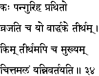
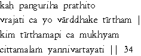

|

|
Verse 34 - Meaning:
Q: Who (kah) is the really lame man ? (pangur-iha prathito)
A: That one who goes about on pilgrimage to holy places (vrajati -tiirtham) only after old age has set in.(vaarddhake)
Q:What (kim) is the chief (mukhyam) of Holy places ? (tiirtham-api ca)
A: That place where the mind (citta-malam) gets purified.(yan-nivartayati)
|